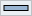

ツールバーによるボタン型のランチャーが Pe の主機能となります。
配置
ツールバーはディスプレイ毎に一つ配置されて、ディスプレイ内で自由に配置することができます
| 位置 | 役割 |
|---|---|
| フロート |
ディスプレイ内を自由に移動可能なモードです。
左右のリサイズが可能です。 |
 上 上 |
各ディスプレイのデスクトップの四辺に配置するモードです。
タスクバーみたいな配置といえばわかりやすいかと。 |
 下 下 |
|
| 左 | |
 右 右 |
自動的に隠す
ツールバーにマウスカーソルが乗っていない場合にツールバーをデスクトップから隠します。
隠れた状態では元のツールバーの位置に細いバーが表示されます。 バー上にマウスカーソルを移動することで元のツールバーを表示します。
ボタンメニュー
ランチャーボタンの▼をクリックすると該当ランチャーアイテムのメニュー表示を行います。
設定によりメニューボタンを非表示にすることもできます。 その際にメニューを表示するにはボタン上で、
- Shift + 右クリック
- マウス中央ボタン(ホイール)クリック
コンテキストメニュー
ツールバー上で右クリックかアプリケーションメニューでコンテキストメニューが表示されます。 メニューからグループを切り替えたりツールバーに表示しきれないランチャーアイテムを実行することができます。
グループの編集についてはsetting-toolbarを参照してください。